Mobile application¶
The main purpose of the healthcare application is to expedite the harmonization and sharing of mobile sensing datasets for the healthcare domain. It focuses on mobile devices that collect data from sensors used on physical tests by following clinical protocols to assess the risk of falls.
Walkthrough¶
The Mobility Assessment Test (a.k.a., MAT), is a mobile application developed on Android to collect sensor data from smarphones. It has been designed to appropriately guide users to conduct superviced physical test such as Timed Up and Go (a.k.a., TUG), Strength test, and Balance test.
Below images, describe the flow of the process a user should follow in order to run a test.
- Log in¶
| | | |:—|:—| ||The mechanism for logging in is very straightforward, first the user should sign-up, fill in a formulary that requires personal information such as name and age. Once, the user has been registered, he should log-in by typing required credentials (i.e. email and password) and pressing the [ Log-in ] button. | || |
| | | |:—|:—| ||The main screen consiste of 3 key sections. (1) A left menu, that can be opened by pressing on the hamburger icon, (2) an addition button to register a new patient that will be observed / evaluated while performing a physical test, and (3) a patient list. | ||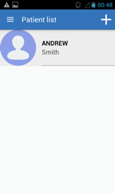 |
- Patient registration¶
| | | |:—|:—| ||In order to register a new patient. Please, press the addition sign; previously mentioned, and fill in the formulary as it will be requested. Note that due privacy aspects, the photograph is not a mandatory field, thus, this could be leave as it is. | ||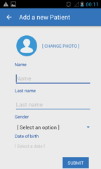 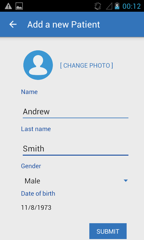 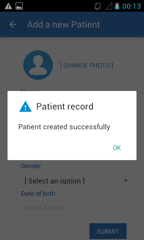|
| | | |:—|:—| || After creating a patient record. The user can have access to the patient file by clicking on respective name (from the main section aforementioned). Optionally, control measurements can be recorded, such as height, waist size, heard rate, and so on, by filling in respective formulary. | ||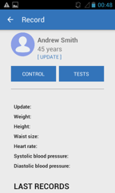 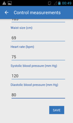 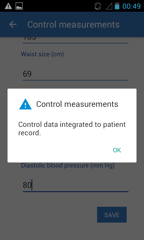|
- Test performance¶
| | | |:—|:—| || Collecting data from a particular test, is one of the key features of the application. To do so, is it necessary to press on the [ Test ] button whiting the specific patient record. | || 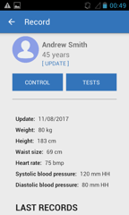 |
| | | |:—|:—| || Then, click on the name of the test to be performed, for example, Strength, or Balance test. | || 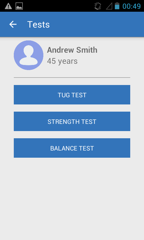 |
TUG Test (Test Up and Go). A simple test used to assess a person’s mobility and requires both static and dynamic balance. It uses the time that a person takes to rise from a chair, walk three meters, turn around, walk back to the chair, and sit down
Strenght test (a.k.a., 30-Second Chair Standard Test). Is administered using a folding chair without arms, with seat height of 17 inches (43.2 cm). The chair, with rubber tips on the legs, is placed against a wall to prevent it from moving
Balance test (a.k.a., 4-Stage Balance Test). Is based on the assessment of postural hypotension. There are four progressively more challenging positions. Patients should not use an assistive device (cane or walker) and keep their eyes open.
| | | |:—|:—| ||Independently of the test selected. An illustrative tutorial will be displayed to guide the user along the process. | || 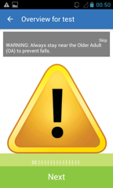 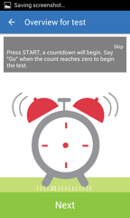 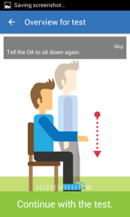|
It is important note that the device should be carried / wore on the lower back of the patient while performing the physical test, as illustrated on below image. Thus, an appropriately coordination to activate the application and place the device should be taken into account.
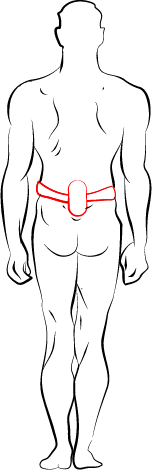
| | | |:—|:—| ||In order to start the test, press the [ Start ] button, and (immediately) place the mobile device on the lower back of the patient. | || |
| | | |:—|:—| ||After a countdown of 3 seconds, the application will start collecting sensor data. It is important to note that the application will stop to do so automatically (i.e., 30 seconds for the strength test and 10 seconds for the balance test), with the unique exception of the TUG test, which will stop until the user manually press the [ Finish ] button.| || 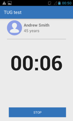 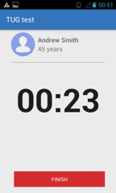 |
- Evaluation of test performed¶
| | | |:—|:—| ||To qualitatively evaluate the test, tick on the answers based on your personal observation. Finally, rank the test and provide any textual feedback to be considerate by those attempting on using the collected data on research studies. | || 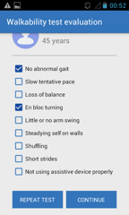 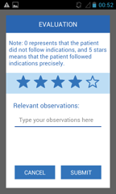 |
| | | |:—|:—| || It is important, to follow direction and messages displayed by the application, so the data is appropriately stored. If there is no problem with the collected data, the patient’s record will be update immediately, showing the date of the most recent test performed (as showed in below section of the Record screen). | || 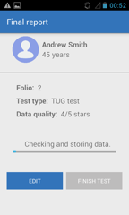 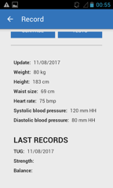|
- Upload data¶
| | | |:—|:—| || Finally, in order to upload the data towards the Fiware server. It is paramount to open the Settings section, located on the left menu. Then, click on the [ Upload Data ] buttons. | || 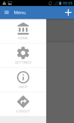 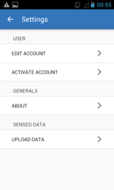 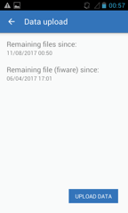 |
- Other services¶
| | | |:—|:—| || There are a few relevant services to take into consideration. For instance, in order to be able of uploading data to the Fiware server, it is necessary to hold an activation code (which keeps control of the users with privileges share data onto the main server). This data is controlled by the owner of the application, so, different mechanism could be used to provide it. | || |
| | | |:—|:—| || Moreover, complementary information about the applications. | || 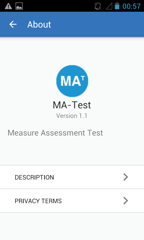 |
| | | |:—|:—| || And ethical aspects can be found within respective section. | || 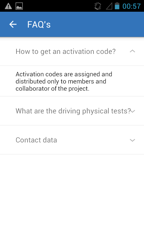|